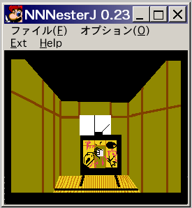

パソコンでファミコン音源を使って曲を作れるソフトppmckで遊んで LSDの曲の8bitアレンジ版を作ってみました。 楽譜の読み方すらわからないド素人が作ったので稚拙な点がありますが、 ネタとして寛容な気持ちで聴いていただければ幸いです。
mp3ファイルはWindowsMediaPlayer等のmp3対応プレーヤーで再生できます。
LSD8bitアレンジメドレーをダウンロードする。
WEBスペースの容量の関係で低音質にしてファイルサイズを小さくしているので良質な音響設備で再生すると粗が目立つかもしれません。